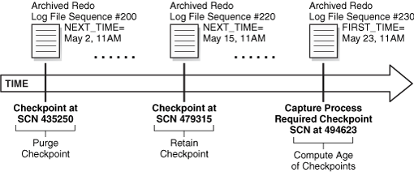
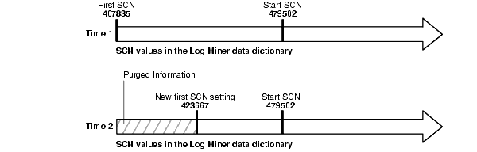
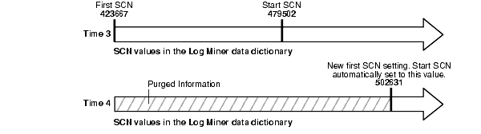
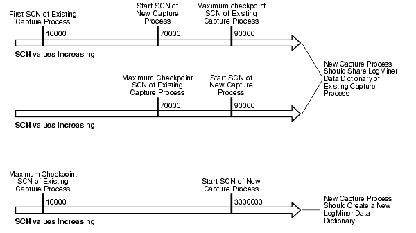
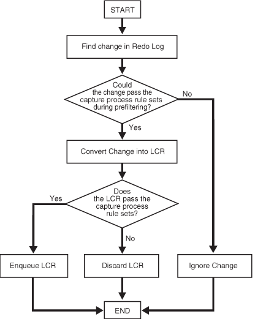

7 Advanced Capture Process Concepts
Capturing information with Oracle Streams means creating a message that contains the information and enqueuing the message into a queue. The captured information can describe a database change, or it can be any other type of information.
The following topics contain conceptual information about capturing information with Oracle Streams:
7.1 Multiple Capture Processes in a Single Database
If you run multiple capture processes in a single database, increase the size of the System Global Area (SGA) for each instance. Use the SGA_MAX_SIZE initialization parameter to increase the SGA size. Also, if the size of the Oracle Streams pool is not managed automatically in the database, then increase the size of the Oracle Streams pool by 10 MB for each capture process parallelism. For example, if you have two capture processes running in a database, and the parallelism parameter is set to 4 for one of them and 1 for the other, then increase the Oracle Streams pool by 50 MB (4 + 1 = 5 parallelism).
Also, Oracle recommends that each ANYDATA queue used by a capture process, propagation, or apply process store captured LCRs from at most one capture process from a particular source database. Therefore, use a separate queue for each capture process that captures changes originating at a particular source database, and make sure each queue has its own queue table. Also, do not propagate messages from two or more capture processes with the same source database to the same queue.
Note:
The size of the Oracle Streams pool is managed automatically if the MEMORY_TARGET, MEMORY_MAX_TARGET, or SGA_TARGET initialization parameter is set to a nonzero value.
See Also:
-
Oracle Streams Replication Administrator's Guide for information about configuring the Oracle Streams pool
-
Oracle Streams Replication Administrator's Guide for more information about the
STREAMS_POOL_SIZEinitialization parameter
7.2 Capture Process Checkpoints
A checkpoint is information about the current state of a capture process that is stored persistently in the data dictionary of the database running the capture process. A capture process tries to record a checkpoint at regular intervals called checkpoint intervals.
The following topics provide more information about capture process checkpoints:
7.2.1 Required Checkpoint SCN
The system change number (SCN) that corresponds to the lowest checkpoint for which a capture process requires redo data is the required checkpoint SCN. The redo log file that contains the required checkpoint SCN, and all subsequent redo log files, must be available to the capture process. If a capture process is stopped and restarted, then it starts scanning the redo log from the SCN that corresponds to its required checkpoint SCN. The required checkpoint SCN is important for recovery if a database stops unexpectedly. Also, if the first SCN is reset for a capture process, then it must be set to a value that is less than or equal to the required checkpoint SCN for the captured process. You can determine the required checkpoint SCN for a capture process by querying the REQUIRED_CHECKPOINT_SCN column in the DBA_CAPTURE data dictionary view.
7.2.2 Maximum Checkpoint SCN
The SCN that corresponds to the last checkpoint recorded by a capture process is the maximum checkpoint SCN. If you create a capture process that captures changes from a source database, and other capture processes already exist which capture changes from the same source database, then the maximum checkpoint SCNs of the existing capture processes can help you to decide whether the new capture process should create a LogMiner data dictionary or share one of the existing LogMiner data dictionaries. You can determine the maximum checkpoint SCN for a capture process by querying the MAX_CHECKPOINT_SCN column in the DBA_CAPTURE data dictionary view.
7.2.3 Checkpoint Retention Time
The checkpoint retention time is the amount of time, in number of days, that a capture process retains checkpoints before purging them automatically. A capture process periodically computes the age of a checkpoint by subtracting the NEXT_TIME of the archived redo log file that corresponds to the checkpoint from FIRST_TIME of the archived redo log file containing the required checkpoint SCN for the capture process. If the resulting value is greater than the checkpoint retention time, then the capture process automatically purges the checkpoint by advancing its first SCN value. Otherwise, the checkpoint is retained. The DBA_REGISTERED_ARCHIVED_LOG view displays the FIRST_TIME and NEXT_TIME for archived redo log files, and the REQUIRED_CHECKPOINT_SCN column in the DBA_CAPTURE view displays the required checkpoint SCN for a capture process.
Figure 7-1 shows an example of a checkpoint being purged when the checkpoint retention time is set to 20 days.
Figure 7-1 Checkpoint Retention Time Set to 20 Days
Description of "Figure 7-1 Checkpoint Retention Time Set to 20 Days"
In Figure 7-1, with the checkpoint retention time set to 20 days, the checkpoint at SCN 435250 is purged because it is 21 days old, while the checkpoint at SCN 479315 is retained because it is 8 days old.
Whenever the first SCN is reset for a capture process, the capture process purges information about archived redo log files before the new first SCN from its LogMiner data dictionary. After this information is purged, the archived redo log files remain on the hard disk, but the files are not needed by the capture process. The PURGEABLE column in the DBA_REGISTERED_ARCHIVED_LOG view displays YES for the archived redo log files that are no longer needed. These files can be removed from disk or moved to another location without affecting the capture process.
If you create a capture process using the CREATE_CAPTURE procedure in the DBMS_CAPTURE_ADM package, then you can specify the checkpoint retention time, in days, using the checkpoint_retention_time parameter. The default checkpoint retention time is 60 days if the checkpoint_retention_time parameter is not specified in the CREATE_CAPTURE procedure, or if you use the DBMS_STREAMS_ADM package to create the capture process. The CHECKPOINT_RETENTION_TIME column in the DBA_CAPTURE view displays the current checkpoint retention time for a capture process.
You can change the checkpoint retention time for a capture process by specifying a new time period in the ALTER_CAPTURE procedure in the DBMS_CAPTURE_ADM package. If you do not want checkpoints for a capture process to be purged automatically, then specify DBMS_CAPTURE_ADM.INFINITE for the checkpoint_retention_time parameter in CREATE_CAPTURE or ALTER_CAPTURE.
Note:
To specify a checkpoint retention time for a capture process, the compatibility level of the database running the capture process must be 10.2.0 or higher. If the compatibility level is lower than 10.2.0 for a database, then the checkpoint retention time for all capture processes running on the database is infinite.
See Also:
-
"A New First SCN Value and Purged LogMiner Data Dictionary Information"
-
"Managing the Checkpoint Retention Time for a Capture Process"
-
Oracle Database PL/SQL Packages and Types Reference for more information about the
CREATE_CAPTUREandALTER_CAPTUREprocedures
7.3 A New First SCN Value and Purged LogMiner Data Dictionary Information
If you reset the first SCN value for an existing capture process, or if the first SCN is reset automatically when checkpoints are purged, then Oracle automatically purges LogMiner data dictionary information before the new first SCN setting. If the start SCN for a capture process corresponds to redo information that has been purged, then Oracle Database automatically resets the start SCN to the same value as the first SCN. However, if the start SCN is higher than the new first SCN setting, then the start SCN remains unchanged.
Figure 7-2 shows how Oracle automatically purges LogMiner data dictionary information prior to a new first SCN setting, and how the start SCN is not changed if it is higher than the new first SCN setting.
Figure 7-2 Start SCN Higher than Reset First SCN
Description of "Figure 7-2 Start SCN Higher than Reset First SCN"
Given this example, if the first SCN is reset again to a value higher than the start SCN value for a capture process, then the start SCN no longer corresponds to existing information in the LogMiner data dictionary. Figure 7-3 shows how Oracle Database resets the start SCN automatically if it is lower than a new first SCN setting.
Figure 7-3 Start SCN Lower than Reset First SCN
Description of "Figure 7-3 Start SCN Lower than Reset First SCN"
As you can see, the first SCN and start SCN for a capture process can continually increase over time, and, as the first SCN moves forward, it might no longer correspond to an SCN established by the DBMS_CAPTURE_ADM.BUILD procedure.
See Also:
-
The
DBMS_CAPTURE_ADM.ALTER_CAPTUREprocedure in the Oracle Database PL/SQL Packages and Types Reference for information about altering a capture process
7.4 ARCHIVELOG Mode and a Capture Process
The following list describes how different types of capture processes read the redo data:
-
A local capture process reads from the redo log buffer whenever possible. If it cannot read from the log buffer, then it reads from the online redo logs. If it cannot read from the log buffer or the online redo logs, then it reads from the archived redo log files. Therefore, the source database must be running in
ARCHIVELOGmode when a local capture process is configured to capture changes. -
A real-time downstream capture process reads online redo data from its source database whenever possible and archived redo log files that contain redo data from the source database otherwise. In this case, the redo data from the source database is stored in the standby redo log at the downstream database, and the archiver at the downstream database archives the redo data in the standby redo log. Therefore, both the source database and the downstream database must be running in
ARCHIVELOGmode when a real-time downstream capture process is configured to capture changes. -
An archived-log downstream capture process always reads archived redo log files from its source database. Therefore, the source database must be running in
ARCHIVELOGmode when an archived-log downstream capture process is configured to capture changes.
You can query the REQUIRED_CHECKPOINT_SCN column in the DBA_CAPTURE data dictionary view to determine the required checkpoint SCN for a capture process. When the capture process is restarted, it scans the redo log from the required checkpoint SCN forward. Therefore, the redo log file that includes the required checkpoint SCN, and all subsequent redo log files, must be available to the capture process.
You must keep an archived redo log file available until you are certain that no capture process will need that file. The first SCN for a capture process can be reset to a higher value, but it cannot be reset to a lower value. Therefore, a capture process will never need the redo log files that contain information before its first SCN. Query the DBA_LOGMNR_PURGED_LOG data dictionary view to determine which archived redo log files will never be needed by any capture process.
When a local capture process falls behind, there is a seamless transition from reading an online redo log to reading an archived redo log, and, when a local capture process catches up, there is a seamless transition from reading an archived redo log to reading an online redo log. Similarly, when a real-time downstream capture process falls behind, there is a seamless transition from reading the standby redo log to reading an archived redo log, and, when a real-time downstream capture process catches up, there is a seamless transition from reading an archived redo log to reading the standby redo log.
Note:
At a downstream database in a downstream capture configuration, log files from a remote source database should be kept separate from local database log files. In addition, if the downstream database contains log files from multiple source databases, then the log files from each source database should be kept separate from each other.
See Also:
-
Oracle Database Administrator's Guide for information about running a database in
ARCHIVELOGmode -
"Displaying SCN Values for Each Redo Log File Used by Each Capture Process" for a query that determines which redo log files are no longer needed
7.5 Capture Process Creation
You can create a capture process using a procedure in the DBMS_STREAMS_ADM package or the DBMS_CAPTURE_ADM package. Using a procedure the DBMS_STREAMS_ADM package to create a capture process is simpler because the procedure automatically uses defaults for some configuration options. In addition, when you use a procedure in the DBMS_STREAMS_ADM package, a rule set is created for the capture process, and rules can be added to the rule set automatically. The rule set is a positive rule set if the inclusion_rule parameter is set to TRUE (the default) in the procedure, or it is a negative rule set if the inclusion_rule parameter is set to FALSE in the procedure.
Alternatively, using the CREATE_CAPTURE procedure in the DBMS_CAPTURE_ADM package to create a capture process is more flexible, and you create one or more rule sets and rules for the capture process either before or after it is created. You can use the procedures in the DBMS_STREAMS_ADM package or the DBMS_RULE_ADM package to add rules to a rule set for the capture process. To create a capture process at a downstream database, you must use the DBMS_CAPTURE_ADM package.
When you create a capture process using a procedure in the DBMS_STREAMS_ADM package and generate one or more rules in the positive rule set for the capture process, the objects for which changes are captured are prepared for instantiation automatically, unless it is a downstream capture process and there is no database link from the downstream database to the source database.
When you create a capture process using the CREATE_CAPTURE procedure in the DBMS_CAPTURE_ADM package, you should prepare for instantiation any objects for which you plan to capture changes. Prepare these objects for instantiations as soon as possible after capture process creation. You can prepare objects for instantiation using one of the following procedures in the DBMS_CAPTURE_ADM package:
-
PREPARE_TABLE_INSTANTIATIONprepares a single table for instantiation. -
PREPARE_SCHEMA_INSTANTIATIONprepares for instantiation all of the objects in a schema and all objects added to the schema in the future. -
PREPARE_GLOBAL_INSTANTIATIONprepares for instantiation all of the objects in a database and all objects added to the database in the future.
These procedures can also enable supplemental logging for the key columns or for all columns in the table or tables prepared for instantiation.
Note:
After creating a capture process, avoid changing the DBID or global name of the source database for the capture process. If you change either the DBID or global name of the source database, then the capture process must be dropped and re-created.
Note:
-
Oracle Streams Replication Administrator's Guide and Oracle Database PL/SQL Packages and Types Reference for more information about the procedures that can create a capture process
-
Oracle Streams Replication Administrator's Guide for more information about capture process rules and preparation for instantiation, and for more information about changing the DBID or global name of a source database
7.5.1 The LogMiner Data Dictionary for a Capture Process
A capture process requires a data dictionary that is separate from the primary data dictionary for the source database. This separate data dictionary is called a LogMiner data dictionary. There can be more than one LogMiner data dictionary for a particular source database. If there are multiple capture processes capturing changes from the source database, then two or more capture processes can share a LogMiner data dictionary, or each capture process can have its own LogMiner data dictionary. If the LogMiner data dictionary that is needed by a capture process does not exist, then the capture process populates it using information in the redo log when the capture process is started for the first time.
The DBMS_CAPTURE_ADM.BUILD procedure extracts data dictionary information to the redo log, and this procedure must be run at least once on the source database before any capture process configured to capture changes originating at the source database is started. The extracted data dictionary information in the redo log is consistent with the primary data dictionary at the time when the DBMS_CAPTURE_ADM.BUILD procedure is run. This procedure also identifies a valid first SCN value that you can use to create a capture process.
You can perform a build of data dictionary information in the redo log multiple times, and a particular build might or might not be used by a capture process to create a LogMiner data dictionary. The amount of information extracted to a redo log when you run the BUILD procedure depends on the number of database objects in the database. Typically, the BUILD procedure generates a large amount of redo data that a capture process must scan subsequently. Therefore, you should run the BUILD procedure only when necessary.
In most cases, if a build is required when a capture process is created using a procedure in the DBMS_STREAMS_ADM or DBMS_CAPTURE_ADM package, then the procedure runs the BUILD procedure automatically. However, the BUILD procedure is not run automatically during capture process creation in the following cases:
-
You use
CREATE_CAPTUREand specify a non-NULLvalue for thefirst_scnparameter. In this case, the specified first SCN must correspond to a previous build. -
You create a downstream capture process that does not use a database link. In this case, the command at the downstream database cannot communicate with the source database to run the
BUILDprocedure automatically. Therefore, you must run it manually on the source database and specify the first SCN that corresponds to the build during capture process creation.
A capture process requires a LogMiner data dictionary because the information in the primary data dictionary might not apply to the changes being captured from the redo log. These changes might have occurred minutes, hours, or even days before they are captured by a capture process. For example, consider the following scenario:
-
A capture process is configured to capture changes to tables.
-
A database administrator stops the capture process. When the capture process is stopped, it records the SCN of the change it was currently capturing.
-
User applications continue to make changes to the tables while the capture process is stopped.
-
The capture process is restarted three hours after it was stopped.
In this case, to ensure data consistency, the capture process must begin capturing changes in the redo log at the time when it was stopped. The capture process starts capturing changes at the SCN that it recorded when it was stopped.
The redo log contains raw data. It does not contain database object names and column names in tables. Instead, it uses object numbers and internal column numbers for database objects and columns, respectively. Therefore, when a change is captured, a capture process must reference a data dictionary to determine the details of the change.
Because a LogMiner data dictionary might be populated when a capture process is started for the first time, it might take some time to start capturing changes. The amount of time required depends on the number of database objects in the database. You can query the STATE column in the V$STREAMS_CAPTURE dynamic performance view to monitor the progress while a capture process is processing a data dictionary build.
See Also:
-
Oracle Streams Replication Administrator's Guide for more information about preparing database objects for instantiation
7.5.1.1 Scenario Illustrating Why a Capture Process Needs a LogMiner Data Dictionary
Consider a scenario in which a capture process has been configured to capture changes to table t1, which has columns a and b, and the following changes are made to this table at three different points in time:
Time 1: Insert values a=7 and b=15.
Time 2: Add column c.
Time 3: Drop column b.
If for some reason the capture process is capturing changes from an earlier time, then the primary data dictionary and the relevant version in the LogMiner data dictionary contain different information. Table 7-1 illustrates how the information in the LogMiner data dictionary is used when the current time is different than the change capturing time.
Table 7-1 Information About Table t1 in the Primary and LogMiner Data Dictionaries
| Current Time | Change Capturing Time | Primary Data Dictionary | LogMiner Data Dictionary |
|---|---|---|---|
|
1 |
1 |
Table |
Table |
|
2 |
1 |
Table |
Table |
|
3 |
1 |
Table |
Table |
Assume that the capture process captures the change resulting from the insert at time 1 when the actual time is time 3. If the capture process used the primary data dictionary, then it might assume that a value of 7 was inserted into column a and a value of 15 was inserted into column c, because those are the two columns for table t1 at time 3 in the primary data dictionary. However, a value of 15 actually was inserted into column b, not column c.
Because the capture process uses the LogMiner data dictionary, the error is avoided. The LogMiner data dictionary is synchronized with the capture process and continues to record that table t1 has columns a and b at time 1. So, the captured change specifies that a value of 15 was inserted into column b.
7.5.1.2 Multiple Capture Processes for the Same Source Database
If one or more capture processes are capturing changes made to a source database, and you want to create a capture process that captures changes to the same source database, then the new capture process can either create a LogMiner data dictionary or share one of the existing LogMiner data dictionaries with one or more other capture processes.
Whether a new LogMiner data dictionary is created for a new capture process depends on the setting for the first_scn parameter when you run CREATE_CAPTURE to create a capture process.
If multiple LogMiner data dictionaries exist, and you specify NULL for the first_scn parameter during capture process creation, then the new capture process automatically attempts to share the LogMiner data dictionary of one of the existing capture processes that has taken at least one checkpoint. You can view the maximum checkpoint SCN for all existing capture processes by querying the MAX_CHECKPOINT_SCN column in the DBA_CAPTURE data dictionary view. During capture process creation, if the first_scn parameter is NULL and the start_scn parameter is non-NULL, then an error is raised if the start_scn parameter setting is lower than all of the first SCN values for all existing capture processes.
If multiple LogMiner data dictionaries exist, and you specify a non-NULL value for the first_scn parameter during capture process creation, then the new capture process creates a new LogMiner data dictionary the first time it is started. In this case, before you create the new capture process, you must run the BUILD procedure in the DBMS_CAPTURE_ADM package on the source database. The BUILD procedure generates a corresponding valid first SCN value that you can specify when you create the new capture process.
You can find a first SCN generated by the BUILD procedure by running the following query:
COLUMN FIRST_CHANGE# HEADING 'First SCN' FORMAT 999999999 COLUMN NAME HEADING 'Log File Name' FORMAT A50 SELECT DISTINCT FIRST_CHANGE#, NAME FROM V$ARCHIVED_LOG WHERE DICTIONARY_BEGIN = 'YES';
This query can return more than one row if the BUILD procedure was run more than once.
The most important factor to consider when deciding whether a new capture process should share an existing LogMiner data dictionary or create one is the difference between the maximum checkpoint SCN values of the existing capture processes and the start SCN of the new capture process. If the new capture process shares a LogMiner data dictionary, then it must scan the redo log from the point of the maximum checkpoint SCN of the shared LogMiner data dictionary onward, even though the new capture process cannot capture changes before its first SCN. If the start SCN of the new capture process is much higher than the maximum checkpoint SCN of the existing capture process, then the new capture process must scan a large amount of redo data before it reaches its start SCN.
A capture process creates a new LogMiner data dictionary when the first_scn parameter is non-NULL during capture process creation. Follow these guidelines when you decide whether a new capture process should share an existing LogMiner data dictionary or create one:
-
If one or more maximum checkpoint SCN values is greater than the start SCN you want to specify, and if this start SCN is greater than the first SCN of one or more existing capture processes, then it might be better to share the LogMiner data dictionary of an existing capture process. In this case, you can assume there is a checkpoint SCN that is less than the start SCN and that the difference between this checkpoint SCN and the start SCN is small. The new capture process will begin scanning the redo log from this checkpoint SCN and will catch up to the start SCN quickly.
-
If no maximum checkpoint SCN is greater than the start SCN, and if the difference between the maximum checkpoint SCN and the start SCN is small, then it might be better to share the LogMiner data dictionary of an existing capture process. The new capture process will begin scanning the redo log from the maximum checkpoint SCN, but it will catch up to the start SCN quickly.
-
If no maximum checkpoint SCN is greater than the start SCN, and if the difference between the highest maximum checkpoint SCN and the start SCN is large, then it might take a long time for the capture process to catch up to the start SCN. In this case, it might be better for the new capture process to create a LogMiner data dictionary. It will take some time to create the new LogMiner data dictionary when the new capture process is first started, but the capture process can specify the same value for its first SCN and start SCN, and thereby avoid scanning a large amount of redo data unnecessarily.
Figure 7-4 illustrates these guidelines.
Figure 7-4 Deciding Whether to Share a LogMiner Data Dictionary
Description of "Figure 7-4 Deciding Whether to Share a LogMiner Data Dictionary"
Note:
-
If you create a capture process using one of the procedures in the
DBMS_STREAMS_ADMpackage, then it is the same as specifyingNULLfor thefirst_scnandstart_scnparameters in theCREATE_CAPTUREprocedure. -
You must prepare database objects for instantiation if a new capture process will capture changes made to these database objects. This requirement holds even if the new capture process shares a LogMiner data dictionary with one or more other capture processes for which these database objects have been prepared for instantiation.
See Also:
-
Oracle Database PL/SQL Packages and Types Reference for more information about setting the
first_scnandstart_scnparameters in theCREATE_CAPTUREprocedure
7.6 The Oracle Streams Data Dictionary
Propagations and apply processes use an Oracle Streams data dictionary to keep track of the database objects from a particular source database. An Oracle Streams data dictionary is populated whenever one or more database objects are prepared for instantiation at a source database. Specifically, when a database object is prepared for instantiation, it is recorded in the redo log. When a capture process scans the redo log, it uses this information to populate the local Oracle Streams data dictionary for the source database. For local capture, this Oracle Streams data dictionary is at the source database. For downstream capture, this Oracle Streams data dictionary is at the downstream database.
When you prepare a database object for instantiation, you are informing Oracle Streams that information about the database object is needed by propagations that propagate changes to the database object and apply processes that apply changes to the database object. Any database that propagates or applies these changes requires an Oracle Streams data dictionary for the source database where the changes originated.
After an object has been prepared for instantiation, the local Oracle Streams data dictionary is updated when a DDL statement on the object is processed by a capture process. In addition, an internal message containing information about this DDL statement is captured and placed in the queue for the capture process. Propagations can then propagate these internal messages to destination queues at databases.
An Oracle Streams data dictionary is multiversioned. If a database has multiple propagations and apply processes, then all of them use the same Oracle Streams data dictionary for a particular source database. A database can contain only one Oracle Streams data dictionary for a particular source database, but it can contain multiple Oracle Streams data dictionaries if it propagates or applies changes from multiple source databases.
See Also:
-
Oracle Streams Replication Administrator's Guide for more information about instantiation
7.7 Capture Process Rule Evaluation
A capture process evaluates changes it finds in the redo log against its positive and negative rule sets. The capture process evaluates a change against the negative rule set first. If one or more rules in the negative rule set evaluate to TRUE for the change, then the change is discarded, but if no rule in the negative rule set evaluates to TRUE for the change, then the change satisfies the negative rule set. When a change satisfies the negative rule set for a capture process, the capture process evaluates the change against its positive rule set. If one or more rules in the positive rule set evaluate to TRUE for the change, then the change satisfies the positive rule set, but if no rule in the positive rule set evaluates to TRUE for the change, then the change is discarded. If a capture process only has one rule set, then it evaluates changes against this one rule set only.
A running capture process completes the following series of actions to capture changes:
-
Finds changes in the redo log.
-
Performs prefiltering of the changes in the redo log. During this step, a capture process evaluates rules in its rule sets at a basic level to place changes found in the redo log into two categories: changes that should be converted into LCRs and changes that should not be converted into LCRs. Prefiltering is done in two phases. In the first phase, information that can be evaluated during prefiltering includes schema name, object name, and command type. If more information is needed to determine whether a change should be converted into an LCR, then information that can be evaluated during the second phase of prefiltering includes tag values and column values when appropriate.
Prefiltering is a safe optimization done with incomplete information. This step identifies relevant changes to be processed subsequently, such that:
-
A capture process converts a change into an LCR if the change satisfies the capture process rule sets. In this case, proceed to Step 3.
-
A capture process does not convert a change into an LCR if the change does not satisfy the capture process rule sets.
-
Regarding
MAYBEevaluations, the rule evaluation proceeds as follows:-
If a change evaluates to
MAYBEagainst both the positive and negative rule set for a capture process, then the capture process might not have enough information to determine whether the change will definitely satisfy both of its rule sets. In this case, further evaluation is necessary. Proceed to Step 3. -
If the change evaluates to
FALSEagainst the negative rule set andMAYBEagainst the positive rule set for the capture process, then the capture process might not have enough information to determine whether the change will definitely satisfy both of its rule sets. In this case, further evaluation is necessary. Proceed to Step 3. -
If the change evaluates to
MAYBEagainst the negative rule set andTRUEagainst the positive rule set for the capture process, then the capture process might not have enough information to determine whether the change will definitely satisfy both of its rule sets. In this case, further evaluation is necessary. Proceed to Step 3. -
If the change evaluates to
TRUEagainst the negative rule set andMAYBEagainst the positive rule set for the capture process, then the capture process discards the change. -
If the change evaluates to
MAYBEagainst the negative rule set andFALSEagainst the positive rule set for the capture process, then the capture process discards the change.
-
-
-
Converts changes that satisfy, or might satisfy, the capture process rule sets into LCRs based on prefiltering.
-
Performs LCR filtering. During this step, a capture process evaluates rules regarding information in each LCR to separate the LCRs into two categories: LCRs that should be enqueued and LCRs that should be discarded.
-
Discards the LCRs that should not be enqueued because they did not satisfy the capture process rule sets.
-
Enqueues the remaining captured LCRs into the queue associated with the capture process.
For example, suppose the following rule is defined in the positive rule set for a capture process: Capture changes to the hr.employees table where the department_id is 50. No other rules are defined for the capture process, and the parallelism parameter for the capture process is set to 1.
Given this rule, suppose an UPDATE statement on the hr.employees table changes 50 rows in the table. The capture process performs the following series of actions for each row change:
-
Finds the next change resulting from the
UPDATEstatement in the redo log. -
Determines that the change resulted from an
UPDATEstatement to thehr.employeestable and must be captured. If the change was made to a different table, then the capture process ignores the change. -
Captures the change and converts it into an LCR.
-
Filters the LCR to determine whether it involves a row where the
department_idis50. -
Either enqueues the LCR into the queue associated with the capture process if it involves a row where the
department_idis50, or discards the LCR if it involves a row where thedepartment_idis not50or is missing.See Also:
-
How Rules Are Used in Oracle Streams for more information about rule sets for Oracle Streams clients and for information about how messages satisfy rule sets
Figure 7-5 illustrates capture process rule evaluation in a flowchart.
Figure 7-5 Flowchart Showing Capture Process Rule Evaluation
Description of "Figure 7-5 Flowchart Showing Capture Process Rule Evaluation"